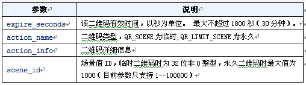
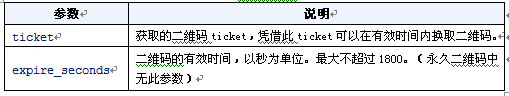
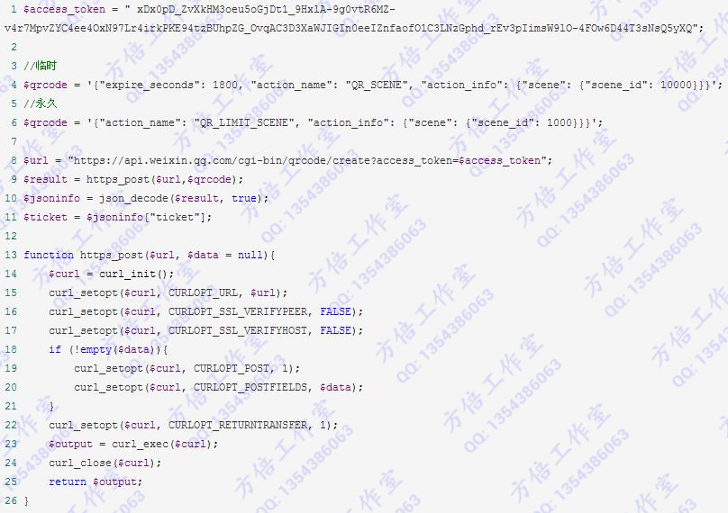
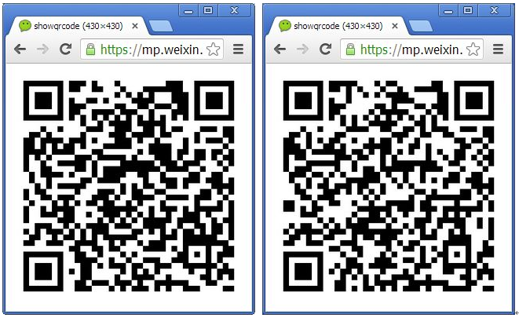
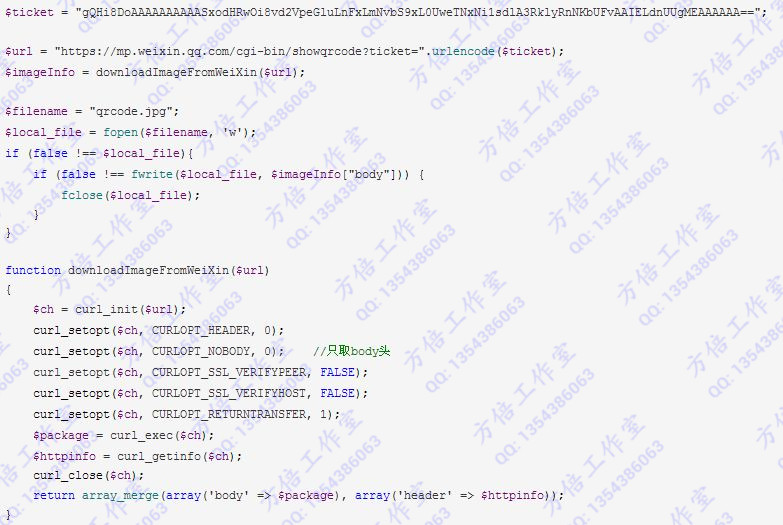
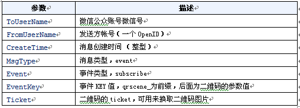
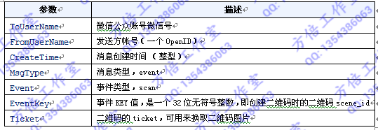
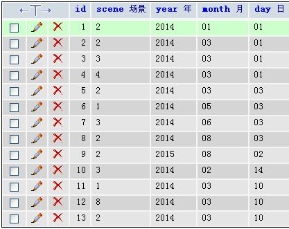
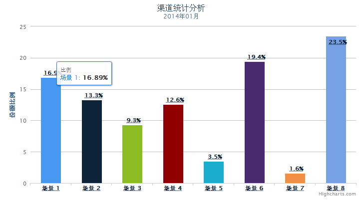

微信公众平台开发(83) 生成带参数二维码
本文介绍在微信公众平台上如何使用高级接口开发生成带参数二维码的功能。
一、场景二维码
为了满足用户渠道推广分析的需要，公众平台提供了生成带参数二维码的接口。使用该接口可以获得多个带不同场景值的二维码，用户扫描后，公众号可以接收到事件推送。
目前有2种类型的二维码，分别是临时二维码和永久二维码，前者有过期时间，最大为1800秒，但能够生成较多数量，后者无过期时间，数量较少（目前参数只支持1--100000）。两种二维码分别适用于帐号绑定、用户来源统计等场景。
用户扫描带场景值二维码时，可能推送以下两种事件：
如果用户还未关注公众号，则用户可以关注公众号，关注后微信会将带场景值关注事件推送给开发者。
如果用户已经关注公众号，在用户扫描后会自动进入会话，微信也会将带场景值扫描事件推送给开发者。
获取带参数的二维码的过程包括两步，首先创建二维码ticket，然后凭借ticket到指定URL换取二维码。
二、创建二维码ticket
每次创建二维码ticket需要提供一个开发者自行设定的参数（scene_id），分别介绍临时二维码和永久二维码的创建二维码ticket过程。
临时二维码请求说明
http请求URL
https://api.weixin.qq.com/cgi-bin/qrcode/create?access_token=TOKEN
POST数据格式
1 { 2 "expire_seconds": 1800, 3 "action_name": "QR_SCENE", 4 "action_info": { 5 "scene": { 6 "scene_id": 100000 7 } 8 } 9 }
返回格式：
{ "ticket": "gQFK8DoAAAAAAAAAASxodHRwOi8vd2VpeGluLnFxLmNvbS9xL3kweXE0T3JscWY3UTltc3ZPMklvAAIEG9jUUgMECAcAAA==", "expire_seconds": 1800 }
永久二维码请求说明
http请求URL
https://api.weixin.qq.com/cgi-bin/qrcode/create?access_token=TOKEN
POST数据格式
{ "action_name": "QR_LIMIT_SCENE", "action_info": { "scene": { "scene_id": 1000 } } }
返回格式
{ "ticket": "gQHi8DoAAAAAAAAAASxodHRwOi8vd2VpeGluLnFxLmNvbS9xL0UweTNxNi1sdlA3RklyRnNKbUFvAAIELdnUUgMEAAAAAA==" }
提交数据参数说明：

返回结果参数说明

程序实现

三、通过ticket换取二维码
获取二维码ticket后，开发者可用ticket换取二维码图片。无须登录态即可调用。
HTTPS GET请求说明（TICKET必需UrlEncode）
https://mp.weixin.qq.com/cgi-bin/showqrcode?ticket=TICKET
ticket正确情况下，http 返回码是200，是一张图片，可以直接展示或者下载。
HTTP头示例如下：
1 { 2 "url": "https://mp.weixin.qq.com/cgi-bin/showqrcode?ticket=gQHi8DoAAAAAAAAAASxodHRwOi8vd2VpeGluLnFxLmNvbS9xL0UweTNxNi1sdlA3RklyRnNKbUFvAAIELdnUUgMEAAAAAA%3D%3D", 3 "content_type": "image/jpg", 4 "http_code": 200, 5 "header_size": 162, 6 "request_size": 181, 7 "filetime": -1, 8 "ssl_verify_result": 20, 9 "redirect_count": 0, 10 "total_time": 0.509, 11 "namelookup_time": 0, 12 "connect_time": 0.058, 13 "pretransfer_time": 0.343, 14 "size_upload": 0, 15 "size_download": 28497, 16 "speed_download": 55986, 17 "speed_upload": 0, 18 "download_content_length": 28497, 19 "upload_content_length": 0, 20 "starttransfer_time": 0.481, 21 "redirect_time": 0 22 }
下面是二种场景二维码的URL及生成的图片

四、下载二维码
二维码生成以后，可以在浏览器中右键另存为本地图片，但如果有很多二维码的时候，用程序来下载就比较方便。
我们使用CURL获取图片的所有信息，并将图片数据保存为一个文件。一个完整的下载代码如下：

这样，在程序当前目录就会生成一个包含二维码的图片文件。
五、扫描带参数二维码事件
用户扫描带场景值二维码时，可能推送以下两种事件：
如果用户还未关注公众号，则用户可以关注公众号，关注后微信会将带场景值关注事件推送给开发者。
如果用户已经关注公众号，则微信会将带场景值扫描事件推送给开发者。
1. 用户未关注时，进行关注后的事件推送
<xml> <ToUserName><![CDATA[gh_45072270791c]]></ToUserName> <FromUserName><![CDATA[o7Lp5t6n59DeX3U0C7Kric9qEx-Q]]></FromUserName> <CreateTime>1389684286</CreateTime> <MsgType><![CDATA[event]]></MsgType> <Event><![CDATA[subscribe]]></Event> <EventKey><![CDATA[qrscene_1000]]></EventKey> <Ticket><![CDATA[gQHi8DoAAAAAAAAAASxodHRwOi8vd2VpeGluLnFxLmNvbS9xL0UweTNxNi1sdlA3RklyRnNKbUFvAAIELdnUUgMEAAAAAA==]]></Ticket> </xml>
参数说明

2. 用户已关注时的事件推送
<xml> <ToUserName><![CDATA[gh_45072270791c]]></ToUserName> <FromUserName><![CDATA[o7Lp5t6n59DeX3U0C7Kric9qEx-Q]]></FromUserName> <CreateTime>1389684184</CreateTime> <MsgType><![CDATA[event]]></MsgType> <Event><![CDATA[SCAN]]></Event> <EventKey><![CDATA[1000]]></EventKey> <Ticket><![CDATA[gQHi8DoAAAAAAAAAASxodHRwOi8vd2VpeGluLnFxLmNvbS9xL0UweTNxNi1sdlA3RklyRnNKbUFvAAIELdnUUgMEAAAAAA==]]></Ticket> </xml>
参数说明

事件代码：
以下代码判定了扫描带参数二维码的两种情形
private function receiveEvent($object) { $contentStr = ""; switch ($object->Event) { case "subscribe": $contentStr = "欢迎关注方倍工作室 "; if (isset($object->EventKey)){ $contentStr = "关注二维码场景 ".$object->EventKey; } break; case "SCAN": $contentStr = "扫描 ".$object->EventKey; //要实现统计分析，则需要扫描事件写入数据库，这里可以记录 EventKey及用户OpenID，扫描时间 break; default: break; } $resultStr = $this->transmitText($object, $contentStr); return $resultStr; }
六、渠道统计分析
后台将获得所有二维码关注情况，数据如下所示：

对其进行简单统计分析后，效果如图

七、内容更新及源码下载
本节最新的教程说明及源代码已在《微信公众平台开发最佳实践》一书中发布，欢迎购买。